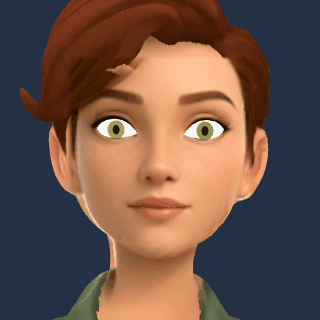
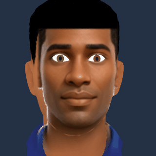
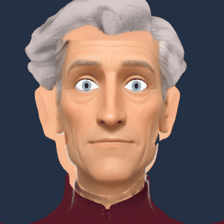

Local face fitting: five-character MVP
Five characters generated locally with ComfyUI, reconstructed with TRELLIS.2, then fitted with local MediaPipe landmarks and a shared face topology. Every expression below is rendered from the exported VRM using the app’s three-vrm library. Click an image to enlarge it.
All five support six emotions, five speech mouth shapes, eyelid closure and iris gaze. The animations below show interpolated speech, blinking and smiling. This remains an experimental fit: visible face/hair and jaw seams, approximate lips and lighting differences remain. Teeth, tongue and unseen facial details are not reconstructed.
| Character | Reference | Neutral | Happiness | Sadness | Anger | Fear | Disgust | Surprise |
|---|---|---|---|---|---|---|---|---|
| Ada — explorerDownload avatarFull referenceDetected landmarks | ||||||||
| Malik — engineerDownload avatarFull referenceDetected landmarks | ||||||||
| Mei — botanistDownload avatarFull referenceDetected landmarks | ||||||||
| Oscar — pilotDownload avatarFull referenceDetected landmarks | ||||||||
| Ines — artistDownload avatarFull referenceDetected landmarks |


Animation from the exported avatars


